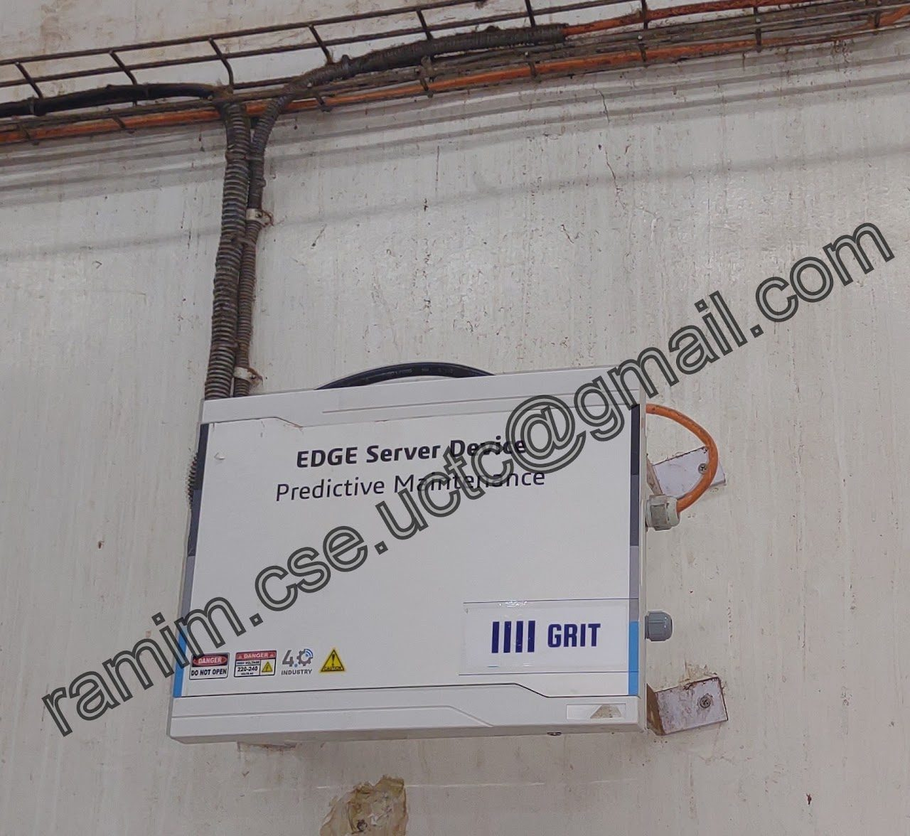
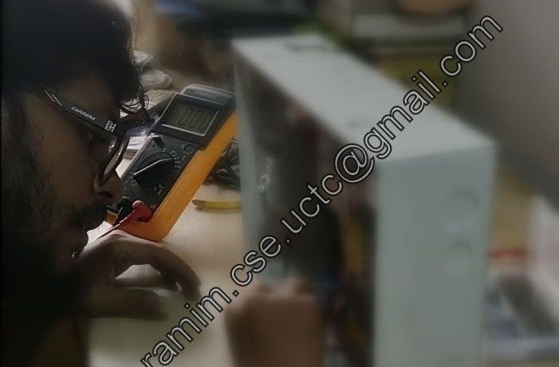

Industrial
Predictive Maintenance for British American Tobacco Bangladesh
An industrial IoT project for British American Tobacco Bangladesh (BAT) that brings sensor nodes and machine-learning algorithms into BAT's manufacturing facilities to predict and prevent equipment failures before they stop production.
- Client
- British American Tobacco Bangladesh (BAT)
- Type
- Predictive maintenance
- Setting
- Manufacturing facilities, Bangladesh
- Industrial IoT
- Sensor nodes
- Machine learning
- Predictive maintenance
Overview
The project aims to change how maintenance is done on BAT's production floors in Bangladesh. Instead of waiting for equipment to break down, sensor nodes collect data from the machines and machine-learning algorithms use it to predict potential failures, so they can be prevented before they happen.
Goals
- Predict failures: spot signs of potential equipment failure early from sensor-node data.
- Prevent breakdowns: act on those predictions to keep machines running and minimise downtime.
- Production efficiency: fewer unplanned stops on the manufacturing lines.
Gallery


Further project details are confidential and cannot be shared publicly.